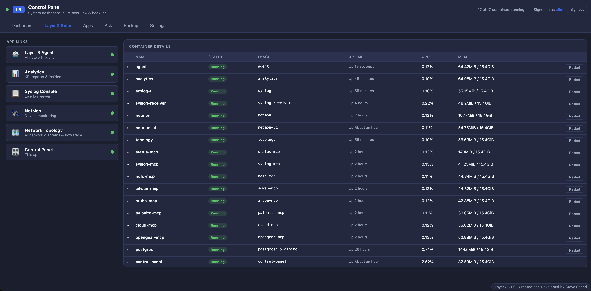
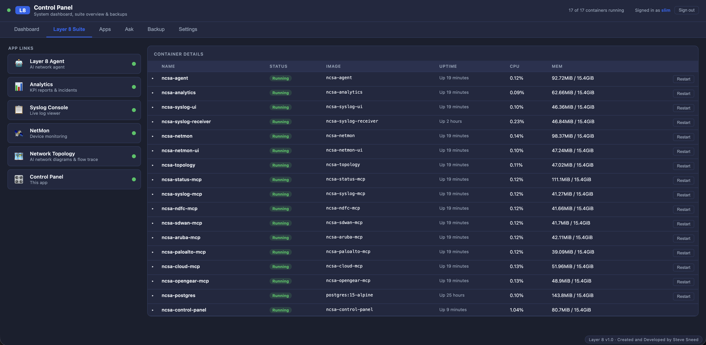
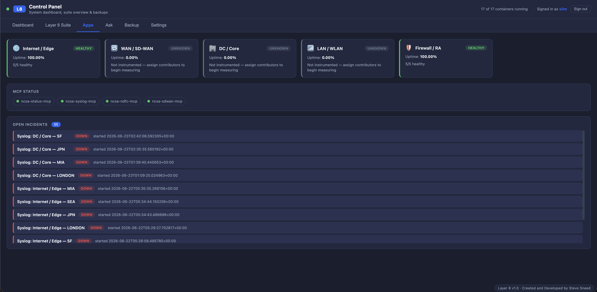
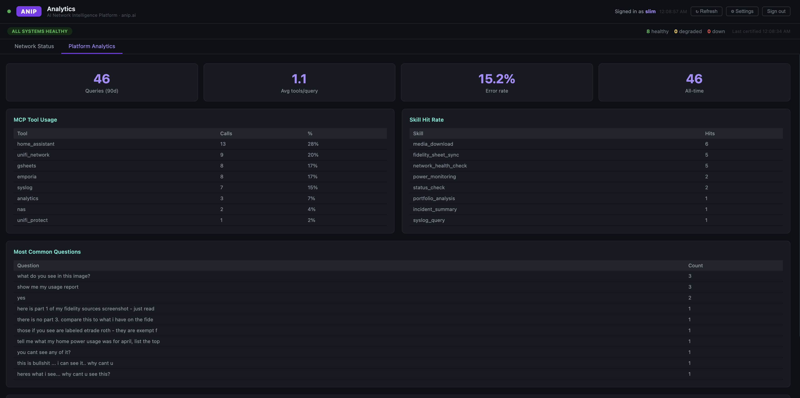
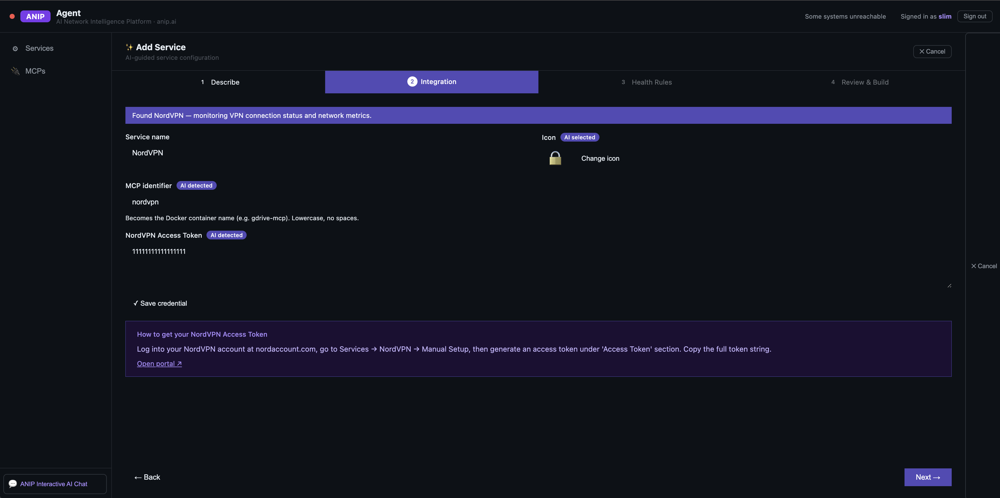
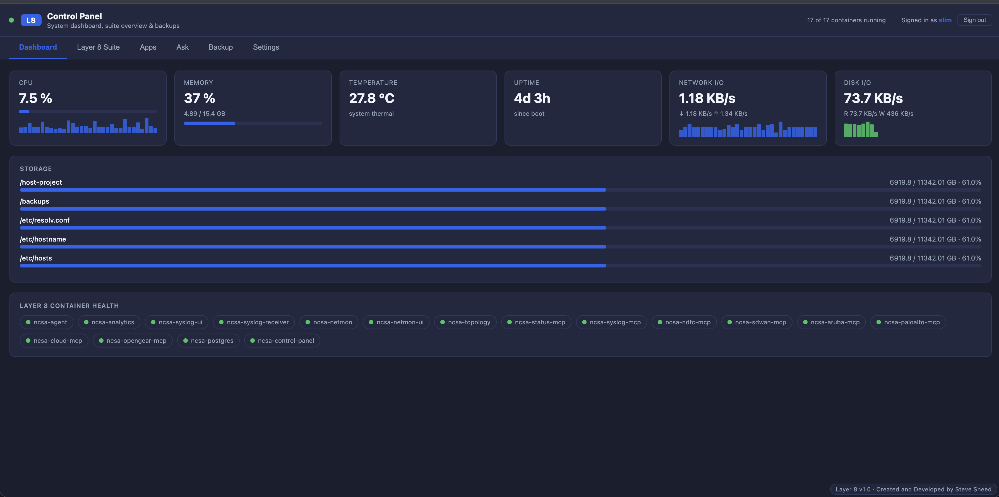
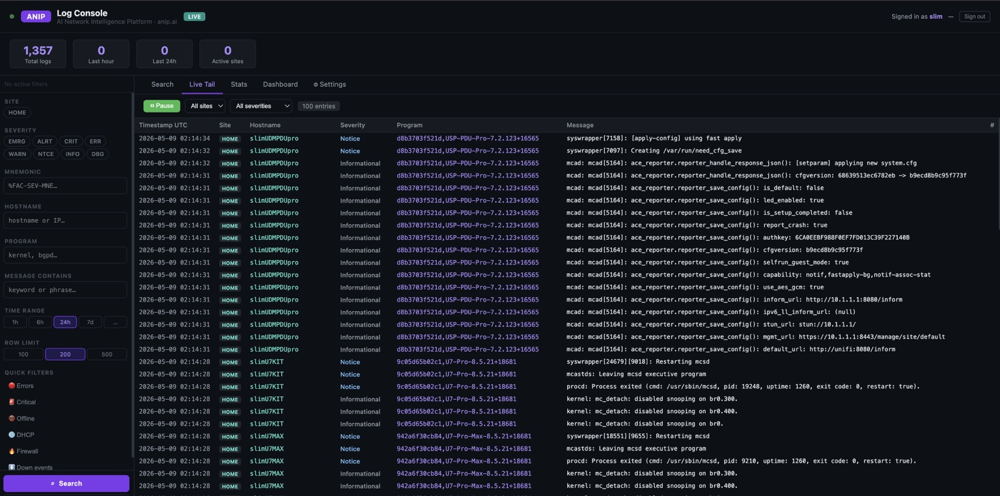
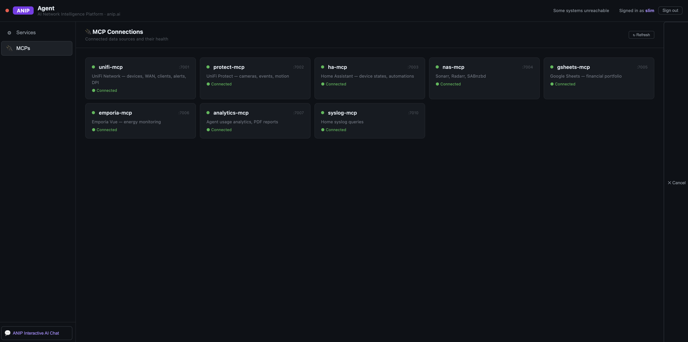
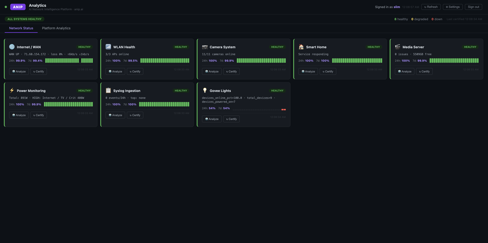
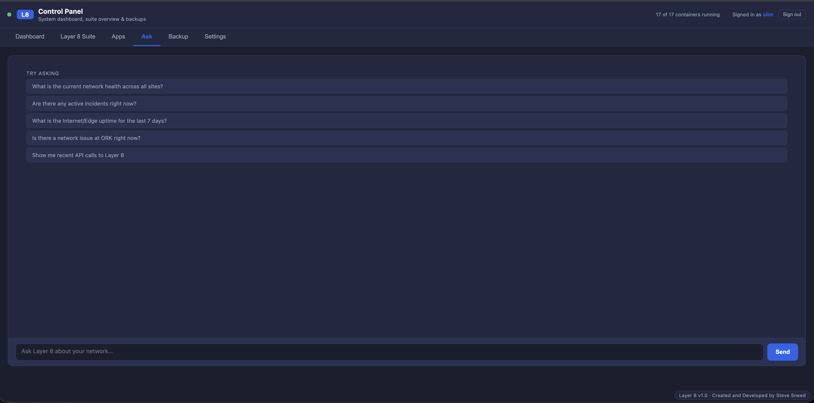

Infrastructure Intelligence as a Service.
Layer 8 turns raw telemetry, logs, MCP tools, and container state into certified operational truth. See what is healthy, what is degraded, what changed, and why it matters across your infrastructure.

One platform. Every signal.
Layer 8 brings together service dashboards, live logs, topology, NetMon, MCP connectors, backups, user management, and AI-assisted analysis into a single operating environment.
Control
A single console for all monitored services, app links, container health, status, users, and operational actions.
Evidence
Live log console with search, filters, quick pivots, and event history. Raw infrastructure truth stays attached to the analysis.
Analytics
Platform and service analytics, KPIs, trends, MCP tool usage, skill hits, and operator insights.
AI Assistant
Ask operational questions in plain language and get AI-guided answers grounded in services, logs, and history.
Certification
AI-backed service certification with health rules, thresholds, pass/fail states, uptime validation, and incident context.
Extensible
MCP-backed architecture makes it easy to add integrations, custom services, and future infrastructure domains.
The Layer 8 Suite
A working infrastructure intelligence suite composed of apps, services, and MCP-backed data sources. Layer 8 is not just a dashboard — it is the control surface for the operating picture.

System dashboard, suite overview, and backups.
- Container details with status, uptime, CPU, and memory
- Central app launcher for Agent, Analytics, Syslog, NetMon, Topology, and Control Panel
- Backup and restore workflows built into the operating surface
- Role-based access and user management
Agent turns services into certified operational state.
Layer 8 Agent lists monitored services, evaluates health, tracks uptime, exposes MCP connections, and uses AI to build new service integrations from plain English.




Log Console: operational evidence.
The Syslog Console gives Layer 8 live tailing, search, filters, severity breakdown, hostname and program targeting, quick filters, stats, and dashboard views.

LIVE TAIL → syslog, kernel, mcad, syswrapper, DHCP, firewall, offline events FILTERS → site, severity, hostname, program, message contains, time range OUTPUT → searchable operational proof for AI analysis, incidents, and certification
Analytics: platform and service intelligence.
Layer 8 separates operational service status from platform analytics. Operators see health posture. Leaders see usage, adoption, tool calls, skill hits, error rates, and common questions.


From data to decisions.
The Ask interface lets operators question the environment directly: network health, open incidents, uptime, site issues, API calls, and operational history.
- Ask questions in natural language
- Get AI-powered RCA and recommendations
- Correlate events, changes, and performance
- Accelerate troubleshooting and reduce noise

Telemetry → Evidence → Certification → Truth.
Layer 8 uses MCP-backed services as the data plane, Control Panel as the platform plane, Agent as the certification plane, Log Console as the evidence plane, Analytics as the visibility plane, and Ask as the AI interface.
MCP data plane
Connectors expose SD-WAN, NDFC, Aruba, Palo Alto, cloud, syslog, status, topology, and custom infrastructure signals.
Certification engine
Services are evaluated with health rules, thresholds, uptime windows, and degraded/down classifications.
Container runtime
Layer 8 runs as a containerized suite with visibility into uptime, CPU, memory, and service restarts.
AI assistant layer
AI answers questions with context from services, MCP tools, live logs, incidents, topology, and analytics.
Backup and restore
Operational backup history and restore procedures are surfaced in the platform, not buried in a terminal.
Admin controls
Users, roles, passwords, and platform access are handled directly in the Control Panel.
Infrastructure intelligence built around operational truth.
Layer 8 is designed for teams that need more than dashboards. It observes signals, certifies health, preserves evidence, and explains what changed.